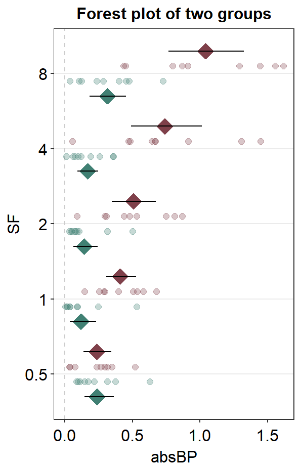
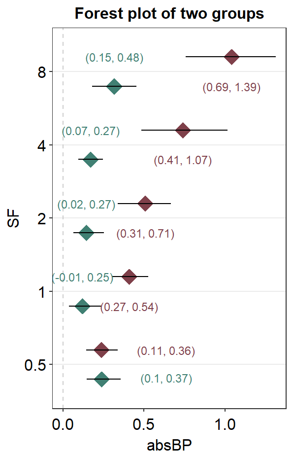

Chapter 8 Recreating Figures from Front. Genetics (2021)
This chapter refers to this paper: Seung Hyun Min, Jiawei Zhou. smplot: An R Package for Easy and Elegant Data Visualization (2021). Frontiers in Genetics, 12:802894.
Load these packages by typing the codes below.
library(tidyverse) # it has ggplot2 package
library(cowplot) # it allows you to save figures in .png file
library(smplot)8.1 Figure 1 - Correlation Plot
corr1 <- ggplot(data = mtcars, mapping = aes(x = drat, y = mpg)) +
geom_point(shape = 21, fill = sm_color('green'), color = 'white',
size = 3) + # ggplot2 default
ggtitle('Correlation plot without smplot')
text1 <- ggplot(data = mtcars, mapping = aes(x = drat, y = mpg)) +
geom_point(color = 'white', fill = 'white') + theme_nothing() +
annotate('text',
label = 'Base plot only using \nthe defaults of ggplot2',
x = 3.9, y = 25)
corr2 <- ggplot(data = mtcars, mapping = aes(x = drat, y = mpg)) +
geom_point(shape = 21, fill = sm_color('green'), color = 'white',
size = 3) +
sm_corr_theme() + # smplot correlation theme
ggtitle('Correlation plot with smplot')
text2 <- ggplot(data = mtcars, mapping = aes(x = drat, y = mpg)) +
geom_point(color = 'white', fill = 'white') + theme_nothing() +
annotate('text', label = 'Base plot + sm_corr_theme()',
x = 3.9, y = 29, fontface = 2) +
annotate('text', x = 3.9, y = 23, parse = TRUE,
label = 'bold(sm_corr_theme())~\nprovides~\na~theme~with') +
annotate('text', x = 3.9, y = 20,
label = 'minimalistic background\nlarger font\ncentered title')
corr3 <- ggplot(data = mtcars, mapping = aes(x = drat, y = mpg)) +
geom_point(shape = 21, fill = sm_color('green'), color = 'white',
size = 3) +
sm_corr_theme() + # smplot corr theme + p and r values
sm_statCorr(color = sm_color('green'), corr_method = 'spearman') +
ggtitle('Statistics computed with smplot')
text3 <- ggplot(data = mtcars, mapping = aes(x = drat, y = mpg)) +
geom_point(color = 'white', fill = 'white') + theme_nothing() +
annotate('text', label = 'Base plot + sm_corr_theme() +\nsm_statCorr()',
x = 3.9, y = 30, fontface = 2) +
annotate('text', x = 3.9, y = 24, parse = TRUE,
label = 'bold(sm_statCorr())~from~smplot~computes') +
annotate('text', x = 3.9, y = 22.6,
label = 'R and p values from a correlation test.') +
annotate('text', x = 3.9, y = 18,
label = '\nIt also prints the best-fit \nlinear regression line \nbased on the R value.')
corr_all <- plot_grid(corr1, text1, corr2, text2,
corr3, text3,
labels = c("A", "", "B", "", "C", ""),
label_size = 12,
ncol = 2, nrow = 3,
scale = 0.95)
print(corr_all)
save_plot("corr_plots.png",
corr_all, ncol = 2, nrow = 3, base_asp = .95,
dpi = 600)8.2 Figure 2 - Bar Plot
set.seed(1) # generate random data
day1 = rnorm(20,0,1)
day2 = rnorm(20,5,1)
Subject <- rep(paste0('S',seq(1:20)), 2)
Data <- data.frame(Value = matrix(c(day1,day2),ncol=1))
Day <- rep(c('Day 1', 'Day 2'), each = length(day1))
df <- cbind(Subject, Data, Day)
bar1 <- ggplot(data = df, mapping = aes(x = Day, y = Value, fill = Day)) +
stat_summary(fun = mean, geom = 'bar') +
theme(legend.position = 'none') +
ggtitle('Bar plot without smplot')
text1 <- ggplot(data = df, mapping = aes(x = Day, y = Value)) +
geom_point(color = 'white', fill = 'white') + theme_nothing() +
annotate('text', label = 'Bar~plot~using~bold(stat_summary())~from~ggplot2',
x = 1.5, y = 3, parse = TRUE)
bar2 <- ggplot(data = df, mapping = aes(x = Day, y = Value, fill = Day)) +
sm_bar(shape = 21, color = 'white', bar_fill_color = 'gray80') +
scale_fill_manual(values = sm_color('blue','orange')) +
ggtitle('Bar plot using smplot')
text2 <- ggplot(data = df, mapping = aes(x = Day, y = Value)) +
geom_point(color = 'white', fill = 'white') + theme_nothing() +
annotate('text', label = 'Bar~plot~using~bold(sm_bar())',
x = 1.5, y = 4.5, parse = TRUE) +
annotate('text', label = 'Individual points,\nlarger font,\nminimalistic theme\ncentered title\nnarrower bar width\nerror bar',
x = 1.5, y = 1.5)
bar_all <- plot_grid(bar1, text1, bar2, text2,
labels = c("A", "", "B", ""),
label_size = 12,
ncol = 2, nrow = 2,
scale = 0.95)
print(bar_all)
save_plot("bars.png",
bar_all, ncol = 2, nrow = 2, base_asp = .95,
dpi = 600)8.3 Figure 3 - Boxplot
df <- read_csv('https://www.smin95.com/data.csv')
df$Day <- factor(df$Day, levels = c('One','Two','Three'))
boxplot1 <- ggplot(data = df, mapping = aes(x = Day, y = Value, color = Day)) +
geom_boxplot() +
theme(legend.position = 'none') +
ggtitle('Boxplot without smplot')
text1 <- ggplot(data = df, mapping = aes(x = Day, y = Value)) +
geom_point(color = 'white', fill = 'white') + theme_nothing() +
annotate('text', label = 'Boxplot~using~bold(geom_boxplot())\n~from~ggplot2',
x = 2, y = 8, parse = TRUE)
boxplot2 <- ggplot(data = df, mapping = aes(x = Day, y = Value, color = Day)) +
sm_boxplot(shape = 16, alpha = 0.4) +
scale_color_manual(values = sm_palette(3)) +
ggtitle('Boxplot with smplot') # smplot's default
text2 <- ggplot(data = df, mapping = aes(x = Day, y = Value)) +
geom_point(color = 'white', fill = 'white') + theme_nothing() +
annotate('text', label = 'Boxplot~using~bold(sm_boxplot())',
x = 2, y = 11, parse = TRUE) +
annotate('text', label = 'Individual points,\nlarger font,\nminimalistic theme\ncentered title',
x = 2, y = 5)
boxplot_all <- plot_grid(boxplot1, text1, boxplot2, text2,
labels = c("A", "", "B", ""),
label_size = 12,
ncol = 2, nrow = 2,
scale = 0.95)
print(boxplot_all)
save_plot("boxplots.png",
boxplot_all, ncol = 2, nrow = 2, base_asp = .95,
dpi = 600)8.4 Figure 4 - Violin Plot
violin1 <- ggplot(data = df, mapping = aes(x = Day, y = Value, color = Day)) +
geom_violin() +
theme(legend.position = 'none') +
ggtitle('Violin plot without smplot') ## ggplot2 default
text1 <- ggplot(data = df, mapping = aes(x = Day, y = Value)) +
geom_point(color = 'white', fill = 'white') + theme_nothing() +
annotate('text', label = 'Violin~plot~using~bold(geom_violin())\n~from~ggplot2',
x = 2, y = 8, parse = TRUE)
violin2 <- ggplot(data = df, mapping = aes(x = Day, y = Value, color = Day)) +
sm_violin() +
scale_color_manual(values = sm_palette(3)) +
ggtitle('Violin plot with smplot') # smplot default
text2 <- ggplot(data = df, mapping = aes(x = Day, y = Value)) +
geom_point(color = 'white', fill = 'white') + theme_nothing() +
annotate('text', label = 'Violin~plot~using~bold(sm_violin())\nfrom~smplot',
x = 2, y = 12, parse = TRUE) +
annotate('text', label = 'Individual points,\nlarger font,\nminimalistic theme\ncentered title\nerror bars',
x = 2, y = 4)
violin_all <- plot_grid(violin1, text1, violin2, text2,
labels = c("A", "", "B", ""),
label_size = 12,
ncol = 2, nrow = 2,
scale = 0.95)
print(violin_all)
save_plot("violins.png",
violin_all, ncol = 2, nrow = 2, base_asp = .95,
dpi = 600)8.5 Figure 5 - Slope Chart
set.seed(1) # generate random data
day1 = rnorm(20,0,1)
day2 = rnorm(20,5,1)
Subject <- rep(paste0('S',seq(1:20)), 2)
Data <- data.frame(Value = matrix(c(day1,day2),ncol=1))
Day <- rep(c('Day 1', 'Day 2'), each = length(day1))
df1 <- cbind(Subject, Data, Day)
ggplot(data = df1, mapping = aes(x = Day, y = Value,
group = Subject, fill = Day)) +
sm_slope(labels = c('Day 1', 'Day 2'),
shape = 21, color = 'white', line_alpha = 0.3) +
scale_fill_manual(values = sm_color('blue','orange')) +
ggtitle('A slope chart with 2 x-levels') +
theme(plot.title = element_text(face="bold")) -> slope_n2
set.seed(2) # generate random data
day1 = rnorm(20,0,1)
day2 = rnorm(20,5,1)
day3 = rnorm(20,6,1.5)
day4 = rnorm(20,7,2)
Subject <- rep(paste0('S',seq(1:20)), 4)
Data <- data.frame(Value = matrix(c(day1,day2,day3,day4),ncol=1))
Day <- rep(c('Day 1', 'Day 2', 'Day 3', 'Day 4'), each = length(day1))
df2 <- cbind(Subject, Data, Day)
ggplot(data = df2, mapping = aes(x = Day, y = Value,
group = Subject, fill = Day)) +
sm_slope(labels = c('Day 1', 'Day 2', 'Day 3', 'Day 4'),
shape = 21, color = 'white', line_alpha = 0.3) +
scale_fill_manual(values = sm_palette(4)) +
ggtitle('sm_slope() with 4 x-levels') +
theme(plot.title = element_text(face="bold")) -> slope_n4
slopes <- plot_grid(slope_n2, slope_n4,
labels = c("A", "B"), rel_widths = c(1.5,2),
label_size = 12,
ncol = 2, nrow = 1,
scale = 0.95)
print(slopes)
save_plot("slopes.png",
slopes, ncol = 2, nrow = 1, base_asp = .95,
dpi = 600)8.6 Figure 6 - Raincloud Plot
Due to the recent update of smplot (Feb. 21st, 2022), paired lines are no longer shown in this figure.
raincloud1 <- sm_raincloud(data = df1, x = Day, y = Value,
boxplot_alpha = 0.5, color = 'white', shape = 21,
sep_level = 0) +
scale_x_continuous(limits = c(0.15,2.85),
labels = c('1', '2'),
breaks = c(1,2)) +
scale_color_manual(values = rep('transparent',2)) +
scale_fill_manual(values = sm_palette(2)) +
ggtitle('A raincloud plot with 2 x-levels') +
xlab('Day') +
theme(plot.title = element_text(face="bold"))
text1 <- ggplot(data = df1, mapping = aes(x = Day, y = Value)) +
geom_point(color = 'white', fill = 'white') + theme_nothing() +
annotate('text', label = 'sep_level = 0\nwhich_side = "right"',
x = 1.5, y = 5, fontface = 2) +
annotate('text', x = 1.5, y = 2.5,
label = 'Separation is minimum amongst\npoints, violin plot and boxplot.\nThis can be adjusted with') +
annotate('text', x = 1.5, y = 1.6, label = '\n sep_level (0-4).', fontface = 2) +
annotate('text', x = 1.5, y = -0.5,
label = 'The violin plots face to the right.\nThis can be be changed with') +
annotate('text', x = 1.5, y = -1.1, label = '\n which_side ("right", "left", "mixed").', fontface = 2)
raincloud2 <- sm_raincloud(data = df1, x = Day, y = Value,
boxplot_alpha = 0.5, color = 'white', shape = 21,
sep_level = 2, which_side = 'mixed') +
scale_x_continuous(limits = c(0.15,2.85),
labels = c('1', '2'),
breaks = c(1,2)) +
scale_color_manual(values = rep('transparent',2)) +
scale_fill_manual(values = sm_palette(2)) +
ggtitle('sm_raincloud() with 2 x-levels') +
xlab('Day') +
theme(plot.title = element_text(face="bold"))
text2 <- ggplot(data = df1, mapping = aes(x = Day, y = Value)) +
geom_point(color = 'white', fill = 'white') + theme_nothing() +
annotate('text', label = 'sep_level = 2\nwhich_side = "mixed"',
x = 1.5, y = 4.7, fontface = 2) +
annotate('text', x = 1.5, y = 2.8,
label = 'Default sep_level is set at 2\n but this can be changed (0-4).') +
annotate('text', x = 1.5, y = 1,
label = 'The violin plots face both to the\nleft (x=1) and right (x=2).') +
annotate('text', x = 1.5, y = -0.6, label = '\nwhich_side = "mixed" only works when\nthere are 2 x discrete levels.', fontface = 2)
raincloud3 <- sm_raincloud(data = df1, x = Day, y = Value,
boxplot_alpha = 0.5, color = 'white', shape = 21,
sep_level = 4, which_side = 'left') +
scale_x_continuous(limits = c(0.15,2.85),
labels = c('1', '2'),
breaks = c(1,2)) +
scale_color_manual(values = rep('transparent',2)) +
scale_fill_manual(values = sm_palette(2)) +
ggtitle('A raincloud with no overlap') +
xlab('Day') +
theme(plot.title = element_text(face="bold"))
text3 <- ggplot(data = df1, mapping = aes(x = Day, y = Value)) +
geom_point(color = 'white', fill = 'white') + theme_nothing() +
annotate('text', label = 'sep_level = 4\nwhich_side = "left"',
x = 1.5, y = 3.5, fontface = 2) +
annotate('text', x = 1.5, y = 1.5,
label = 'The violin plots face to the left.')
raincloud_2x_all <- plot_grid(raincloud1, text1,
raincloud2, text2,
raincloud3, text3,
labels = c("A", "", "B", "", "C", ""),
label_size = 12,
ncol = 2, nrow = 3,
scale = 0.95)
raincloud4 <- sm_raincloud(data = df2, x = Day, y = Value,
boxplot_alpha = 0.5, color = 'white', shape = 21,
sep_level = 2) +
scale_x_continuous(limits = c(0.25,4.75),
labels = c('1', '2', '3', '4'),
breaks = c(1,2,3,4)) +
scale_color_manual(values = rep('transparent',4)) +
scale_fill_manual(values = sm_palette(4)) +
ggtitle('Four discrete levels of x, sep_level = 2, which_side = "right"') +
xlab('Day') +
theme(plot.title = element_text(face="bold"))
raincloud_all <- plot_grid(raincloud_2x_all,
raincloud4,
labels = c("","D"),
label_size = 12,
ncol = 1, nrow = 2,
scale = 0.95,
rel_heights = c(7.5,2.5))
print(raincloud_all)
save_plot("rainclouds.png",
raincloud_all, ncol = 2, nrow = 4, base_asp = .95,
dpi = 600)8.7 Figure 7 - Case Study
set.seed(11) # generate random data
method1 = c(rnorm(19,0,1),2.5)
method2 = c(rnorm(19,0,1),2.5)
Subject <- rep(paste0('S',seq(1:20)), 2)
Data <- data.frame(Value = matrix(c(method1,method2),ncol=1))
Method <- rep(c('Method 1', 'Method 2'), each = length(method1))
df <- cbind(Subject, Data, Method)
# slope chart
ggplot(data = df, mapping = aes(x = Method, y = Value,
group = Subject, fill = Method)) +
sm_slope(labels = c('Method 1', 'Method 2'),
shape = 21, color = 'white', line_alpha = 0.3) +
scale_fill_manual(values = sm_color('blue','orange')) +
ggtitle('Slope chart') +
theme(plot.title = element_text(face="bold")) +
ylab('Gene expression level') +
annotate('text', x = 1.5, y = 2, label = 'sm_slope()') -> slope
# correlation plot
df3 <- data.frame(first = method1, second = method2)
corr_plot <- ggplot(data = df3, mapping = aes(x = first, y = second)) +
geom_point(shape = 21, fill = sm_color('blue'), color = 'white',
size = 3) + sm_corr_theme(borders = FALSE) +
scale_y_continuous(limits = c(-2.5,2.5)) +
scale_x_continuous(limits = c(-2.5,2.5)) +
sm_statCorr(color = sm_color('blue'), corr_method = 'pearson',
label_x = -2.2, label_y = 2.3) +
ggtitle('Correlation plot') +
xlab('Method 1') + ylab('Method 2') +
annotate('text', x = 0, y = -2.3, label = 'sm_corr_theme() + sm_statCorr()')
# BA plot
res <- sm_statBlandAlt(df3$first,df3$second)
ba_plot <- sm_bland_altman(df3$first, df3$second, shape = 21,
color = 'white',
fill = sm_color('blue')) +
scale_y_continuous(limits = c(-5,5)) +
scale_x_continuous(limits = c(-2,5)) +
annotate('text', label = 'Mean', x = 4.3, y = res$mean_diff + 0.4) +
annotate('text', label = signif(res$mean_diff,3), x = 4.3, y = res$mean_diff - 0.4) +
annotate('text', label = 'Upper limit', x = 4.3, y = res$upper_limit + 0.4) +
annotate('text', label = signif(res$upper_limit,3), x = 4.3, y = res$upper_limit - 0.4) +
annotate('text', label = 'Lower limit', x = 4.3, y = res$lower_limit + 0.4) +
annotate('text', label = signif(res$lower_limit,3), x = 4.3, y = res$lower_limit - 0.4) +
ggtitle('Bland-Altman plot') +
annotate('text', x = 1.5, y = -4, label = 'sm_statBlandAlt() + \nsm_bland_altman()')
case_study <- plot_grid(slope, corr_plot, ba_plot,
labels = c("A", "B", "C"),
hjust = -4, # horizontal position of ABC labels
label_size = 12,
ncol = 3, nrow = 1,
scale = 0.95)
print(case_study)
save_plot("case_study.png",
case_study, ncol = 3, nrow = 1, base_asp = .95,
dpi = 600)